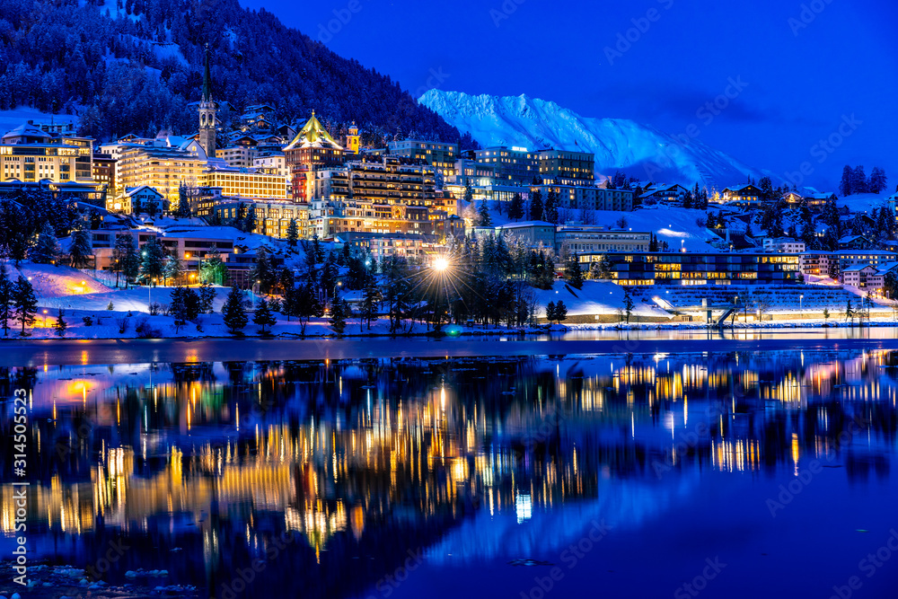
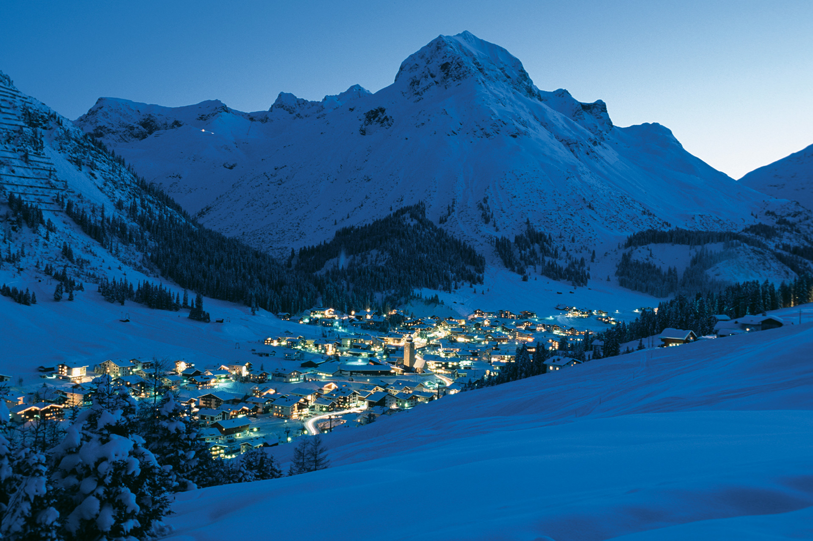

Winter holidays in the mountains are no longer just about hitting the slopes—they’re increasingly about relaxation, rejuvenation, and holistic wellness. Skiing and spa experiences complement each other perfectly: after a day navigating powdery trails, nothing beats soaking in a hot tub, enjoying a massage, or unwinding in a sauna. Here are some of the best resorts where skiing meets wellness.
1. St. Moritz, Switzerland

St. Moritz is synonymous with luxury and wellness. Alongside its perfectly groomed pistes, the town boasts numerous five-star spa hotels. Visitors can enjoy thermal baths, alpine massages, and beauty treatments while taking in panoramic mountain views. Many resorts also offer yoga classes and guided meditation sessions.
2. Lech Zürs, Austria

This Austrian gem blends elegant skiing with top-notch wellness facilities. Spa resorts in Lech feature heated pools, saunas, and alpine-inspired treatments using natural ingredients like mountain herbs and essential oils. After skiing, guests can relax in cozy lounges overlooking the snowy landscape.
3. Courchevel 1850, France
 Courchevel combines world-class skiing with opulent wellness options. Luxury hotels offer full-service spas with massages, hydrotherapy pools, and aromatherapy treatments. Many resorts provide ski-in/ski-out access, so you can alternate effortlessly between slopes and relaxation.
Courchevel combines world-class skiing with opulent wellness options. Luxury hotels offer full-service spas with massages, hydrotherapy pools, and aromatherapy treatments. Many resorts provide ski-in/ski-out access, so you can alternate effortlessly between slopes and relaxation.
4. Zermatt, Switzerland
 Zermatt’s glacier skiing is matched by its indulgent wellness scene. Resorts provide heated infinity pools, saunas with Matterhorn views, and spa treatments focused on recovery and relaxation. Skiers often end their day with a warm drink in a mountain-view relaxation room.
Zermatt’s glacier skiing is matched by its indulgent wellness scene. Resorts provide heated infinity pools, saunas with Matterhorn views, and spa treatments focused on recovery and relaxation. Skiers often end their day with a warm drink in a mountain-view relaxation room.
5. Cortina d’Ampezzo, Italy
 The Italian Dolomites are perfect for combining skiing with wellness. Cortina offers stylish hotels with thermal pools, hot tubs, and wellness programs. Alpine massages and aromatherapy treatments help soothe muscles after skiing, while panoramic terraces allow guests to enjoy the crisp mountain air.
The Italian Dolomites are perfect for combining skiing with wellness. Cortina offers stylish hotels with thermal pools, hot tubs, and wellness programs. Alpine massages and aromatherapy treatments help soothe muscles after skiing, while panoramic terraces allow guests to enjoy the crisp mountain air.
Choosing a ski holiday that emphasizes wellness ensures a balanced experience—adrenaline on the slopes followed by complete relaxation. These resorts prove that a perfect winter getaway can be both active and restorative, leaving you refreshed, recharged, and ready for another day in the mountains.